A Practical Guide to Load and Stress Testing: Fundamentals and k6 in Practice
Greetings, my name is Darmawan, and I am a Senior Software Development Engineer in Test (SDET). I've spent my career in testing, building test frameworks and test architecture from scratch. More recently that work has centered on AI test infrastructure — the platform layer AI-assisted testing runs on — and on putting AI-assisted testing into practice. One question comes up again and again, deceptively simple:
"Can you make sure this survives?"
That question is the start of every load test I run. And the answer is never a tool. It's a number.
In this article, we'll walk through how I do performance testing end to end: the core vocabulary every tester needs first, how I gather the requirement, and how I run load and stress tests in k6. The tool is the easy part — the concepts are the subject, and they stay the same whichever tool you pick. Let's start with the ticket that lands on my desk most often.
The Ticket That Starts It All
A product manager drops me a message:
"Black Friday is in three weeks, and checkout needs to survive it. Can you test it?"
I've done this enough times to know the first thing I need isn't a tool. It's a number.
A flash sale isn't steady traffic. It's a spike — a wall of people arriving in the same minute, hammering the same path: browse, add to cart, check out, pay. "It works in staging" tells me nothing about that minute. So before I open a load-testing tool, before I write a single line of script, I go and find out what "survive" actually means in numbers.
The Vocabulary You Need First
Before we touch a tool, let me define the terms I'll use for the rest of this article. These concepts are the same whether you use k6, JMeter, Gatling, or Locust — the tool changes, the vocabulary doesn't. If you remember nothing else, remember these.
Virtual User (VU). A VU is one simulated user. It's a lightweight worker inside your load tool that behaves like a real person: it sends a request, waits for the reply, thinks for a moment, then sends the next one. When someone says "run 100 VUs," they mean 100 simulated users hitting the system at the same time.
Iteration. One full pass through what a VU does — one loop of the script. If a VU logs in, adds to cart, and checks out, that whole sequence is one iteration. A test's total work is roughly VUs × iterations.
Ramp-up. Instead of slamming the system with all VUs at once, I bring them up gradually. Ramp-up is the time it takes to go from zero (or a low number) to the target number of users. Ramping up mimics how real traffic arrives — people trickle in, they don't all appear at once.
Throughput. How much work the system handled per unit of time, usually measured in requests per second (req/s or RPS). This is the "how much did it do" number.
Latency (response time). How long a single request took, from sending it to getting the full reply. Reported in milliseconds, and always as a distribution — p50, p95, p99 — never as a plain average (we'll see why in a moment).
Think time. The pause between one user action and the next — the seconds a real person spends reading the page or deciding what to click. Without think time, your VUs hammer the server like robots, and you test a scenario no real user creates.
Concurrency. How many requests are in flight at the exact same moment. This is not the same as throughput: throughput is per second, concurrency is instantaneous. Ten users each waiting on a slow 2-second request is 10 concurrent requests, even if the throughput is only 5 req/s.
Error rate. The fraction of requests that failed — timeouts, 5xx responses, connection drops. A test that hits its latency target but fails 20% of requests has not passed.
And the four types of test I'll refer to by name, since they answer different questions:
- Smoke test — one or two users, a minute. The question: does it work at all? I run this before anything else.
- Load test — expected production traffic, held steady. The question: does it meet the target?
- Stress test — traffic ramped past capacity until it breaks. The question: where's the limit?
- Spike test — a sudden huge jump in traffic, then a drop. The question: does it survive a surge?
Those eight vocabulary terms and four test types are the foundation. Everything else in this article builds on them.
What Performance Testing Actually Is
Performance testing is the umbrella discipline: proving a system meets its performance requirements, and finding the limits where it stops meeting them. Under that umbrella sit many kinds of test — smoke, load, stress, spike, soak, volume, scalability, capacity, breakpoint, regression, and more. Each answers a different question, and a serious testing effort uses several of them.
In this article, I'm focusing on two of them: load testing and stress testing. They're the two I reach for most, and they cover the core questions — does it meet the target? and where does it break? Once you understand these two, the others become variations on the same theme.
I think about these two in terms of two halves:
- Verification — does the system meet the target we agreed on? (load testing)
- Exploration — where does it stop meeting it, and why? (stress testing)
Neither half is the whole of performance testing — but together they answer the question the ticket started with: will this survive?
The Four Questions Every Test Answers
Whatever the type, a performance test answers exactly four questions:
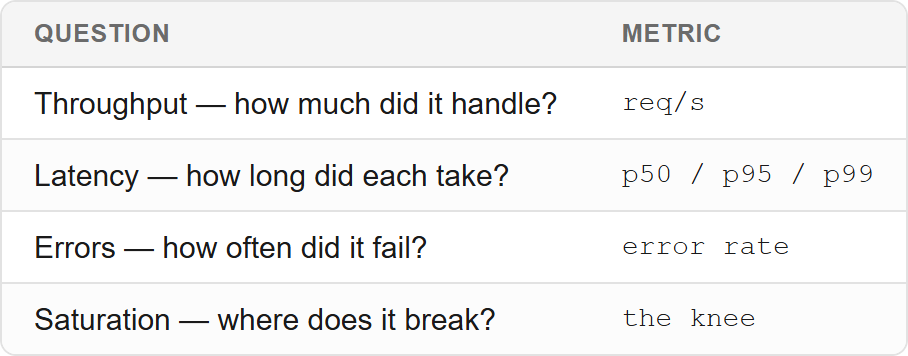
If a test doesn't produce those four numbers, it isn't finished.
Why the Average Lies
This is the single most important idea in performance testing, and it's why I never report an average.
Server A: everyone waits 100ms average = 100ms
Server B: 99% wait 10ms, 1% wait 9s average = 100msSame average. Completely different systems. Server B is on fire — one in a hundred users is waiting nine seconds, and the average hides every one of them.
It's like describing a city's weather by its yearly average. Comfortable on paper — and it tells you nothing about the day the river flooded.
That's what percentiles are for:
- p50 (median) — half the requests were faster than this.
- p95 — 95% were faster; the worst 5% are above it.
- p99 — 99% were faster; the worst 1% are above it.
My rule: p95 and p99 are what I report and what I alert on. The average is for dashboards nobody acts on.
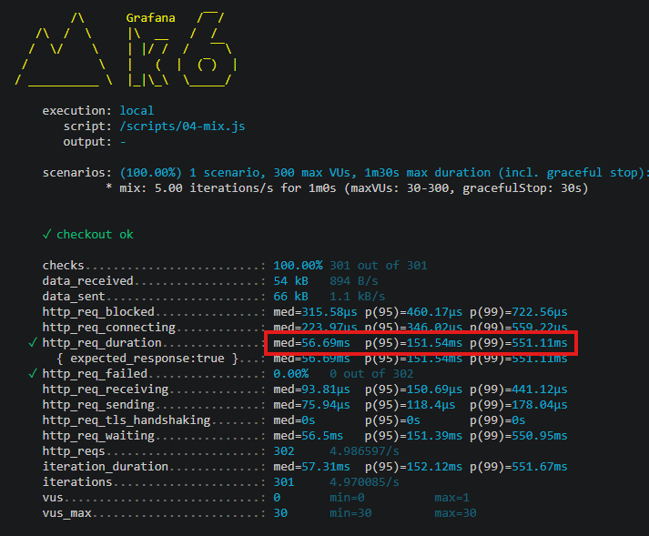
What to look at: the gap between p95 and p99. A small slice of requests is far slower than the rest — and a plain average would have hidden every one of them.
Open vs Closed Models
This one is subtle, and it decides whether your test can find a breaking point at all. It comes down to one question: when the server slows down, does your test slow down with it — or does it keep pushing?
- Closed model: you set the number of users. Each user sends a request, waits for the reply, then sends the next. The request rate depends on how fast the server answers.
- Open model: you set the requests per second. The tool offers that rate regardless of what the server does.
Let's make that concrete with a small example. Say I want to load a checkout API that normally takes 200ms, and I want 50 requests per second. On a healthy server, 50 users each looping send → wait 200ms → send will naturally produce about 50 requests per second. So far, both models look identical.
Now the server slows down. Each checkout now takes 2 seconds instead of 200ms. Watch what each model does:
Closed model — 50 users, each waiting for the reply:
Each user: send → wait 2s → send → wait 2s → ...
50 users × (1 request every 2s) = 25 req/sThe rate halved, from 50 req/s to 25 req/s — without anyone asking it to. The users are still there, but they're stuck waiting, so they send fewer requests. My test just quietly reduced the load, right when the system was struggling. If the server got even slower, the load would drop even further. The test protects the server from the very overload I'm trying to create.
Open model — 50 requests per second, offered no matter what:
Every second: the tool fires 50 new requests, finished or not
Server handles ~25/s → the other 25 pile up in a queueThe tool keeps offering 50 req/s. The server can only handle 25, so requests queue up. The queue grows, waiting time grows with it, and eventually requests time out or the system falls over. That's the failure I'm trying to find — and only the open model exposes it.
A closed model reduces load exactly when you most want to see the pressure build. It's a thermometer that cools down when you put it in hot water.
So: to find where a system breaks, use an open model. Remember this — it comes back when we pick an executor in k6.
Little's Law and the Knee
There's one equation behind capacity planning, and it's worth memorising:
concurrency = arrival rate × latencyConcurrency is how many requests are in flight at once. It tells me how many requests must be in flight to sustain a rate — and therefore how much capacity I need. If I want 50 req/s and each request takes 0.2s, then 50 × 0.2 = 10 requests are in flight at any moment. I need to be able to hold 10.
Then there's the knee:
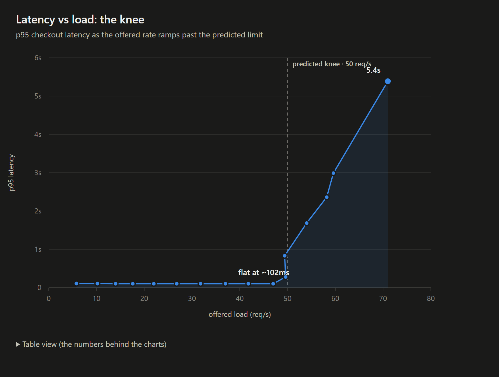
What to look at: where the line bends. Left of the dashed mark, latency is flat — more load, same speed. Right of it, latency climbs steeply. That bend is the knee.
Think of a car engine. Up to a point, pressing the pedal gives you more speed. Then you hit the limit — the pedal does nothing more, and the engine just strains. Below the knee, latency is flat: the system absorbs more traffic without getting slower. At the knee it starts to climb. Past it, it explodes.
Finding that bend is the entire point of a stress test — which is why I ramp the load rather than hold it constant. A constant load can only tell me whether one point is fine. A ramp finds the edge.
Gathering the Requirement
I cannot test performance without a number. "It should be fast" is not testable. "p95 < 300ms at 20 req/s" is.
Where the number comes from, and what I ask:
- Product/business: "How many users at peak? Over how long?"
- The mix: "What will most people be doing?"
- Existing data: analytics or logs from a previous sale, if they exist.
- If nobody knows: I propose a number, get it agreed, and write it down.
The requirement flows all the way through to production:
requirement → target → threshold (in the test) → alert (prod)
"p95 < 300ms" "99% under 300ms" p(95)<300 burn-rate alertThe trap I've hit more than once: a threshold with no requirement behind it is a guess. I once set a p95 threshold so loose that it passed against a result a hundred-odd times better than it — a green ✓ that proved nothing. A threshold is only useful if it can fail.
Part 2 — k6, Practice, and a Demo
Now that the concepts are in place, let's look at the tool. In this section, we'll cover the k6 fundamentals you actually need, then run them against a small demo so you can see every step produce a real number.
k6 in a Nutshell
Every k6 script has two parts:
export const options = { ... } // HOW to run: load shape, thresholds
export default function () { ... } // WHAT one user does, onceoptions is declarative — k6 reads it and configures the run. default() is the work — the loop body. There's also setup(), which runs once before the load, and teardown(), which runs once after.
Executors — The Six Load Shapes
An executor is the kind of load pattern. k6 has six:
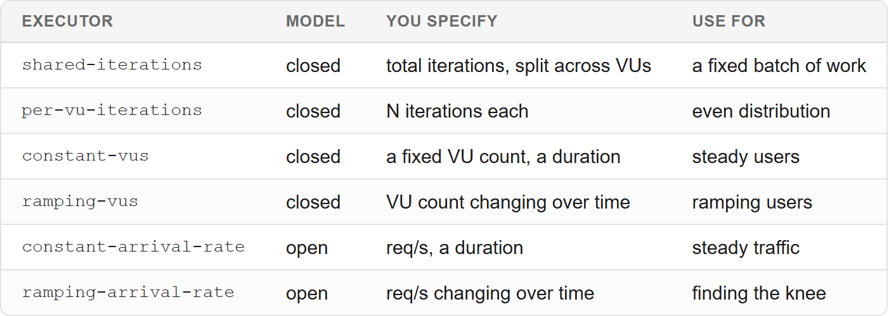
How I choose, in one question: do I know the traffic, or do I know the users? For an API, I know the traffic — requests arrive whether or not the server keeps up. So I use an arrival-rate executor.
Which executor for which test:
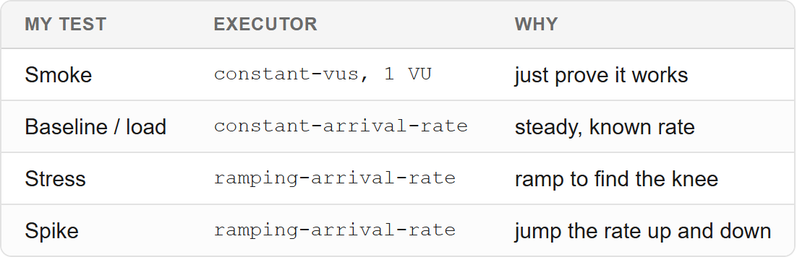
The Key Parameters
ramping-arrival-rate: {
startRate: 5,
timeUnit: '1s', // rates are PER SECOND
preAllocatedVUs: 50,
maxVUs: 200,
stages: [
{ duration: '15s', target: 20 },
{ duration: '30s', target: 60 },
{ duration: '30s', target: 100 },
{ duration: '15s', target: 0 },
],
}timeUnitsets the scale for every number.startRate: 5, timeUnit: '1s'means 5 req/s;'1m'means 5 req/min — twelve times less.preAllocatedVUs— VUs created up front (allocating is expensive).maxVUs— the ceiling k6 may grow to if the rate needs more.stages— where the rate goes, over time.
And the metric that tells me my test was lying: dropped_iterations. These are iterations that never began because no VU was available. If it's non-zero, the offered rate exceeded the delivered rate — my test isn't testing what it says it is. The fix is to raise maxVUs.
Thresholds
A threshold is a pass/fail rule for the whole run. k6 gives you two ways to assert something, and it's worth knowing the difference:
check()— validates a single response during the run. It records whether the response passed and shows up in the summary as a pass rate, but it does not fail the run. A run where every check failed still exits successfully.- A threshold — a rule applied to an aggregate metric across the whole run. If the rule is broken, the run fails with exit code 99.
That exit code is the whole point: CI reads it, so a threshold is what turns a performance test into something that can actually block a deploy. A check() that logs failures but exits 0 is invisible to a pipeline.
thresholds: {
http_req_failed: ['rate<0.01'], // under 1% errors
http_req_duration: ['p(95)<300', 'p(99)<800'],
checks: ['rate>0.99'], // 99% of checks passed
}Note that last line — you can even put a threshold on the checks rate, which is how you get check() failures to fail the run after all.
Aggregations depend on the metric type:
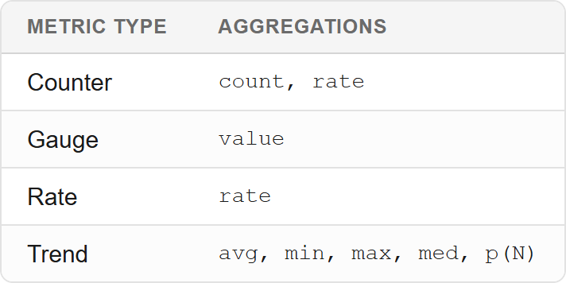
p(N) is a percentile, 0–100, in milliseconds.
The Metrics k6 Gives You Free
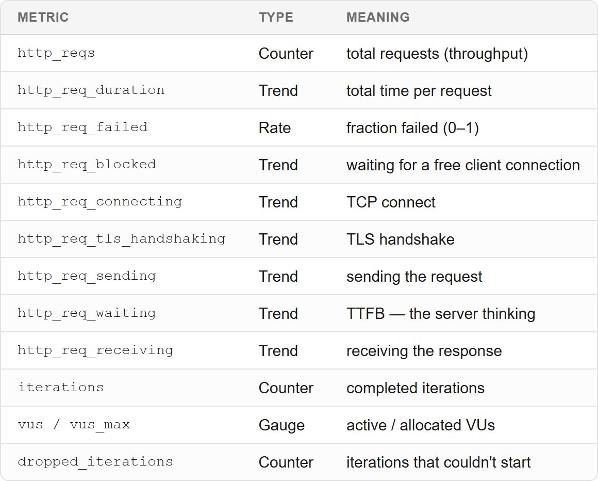
Two things I always point out:
http_req_failedis a RATE (0–1), not a count.rate<0.01means "under 1%", not "under one request".http_req_durationEXCLUDESblockedandconnecting. So a slow network or a saturated test rig hides in a metric I didn't look at. Always read the phases, not just the duration.
Reading the phases tells me which class of layer is at fault:
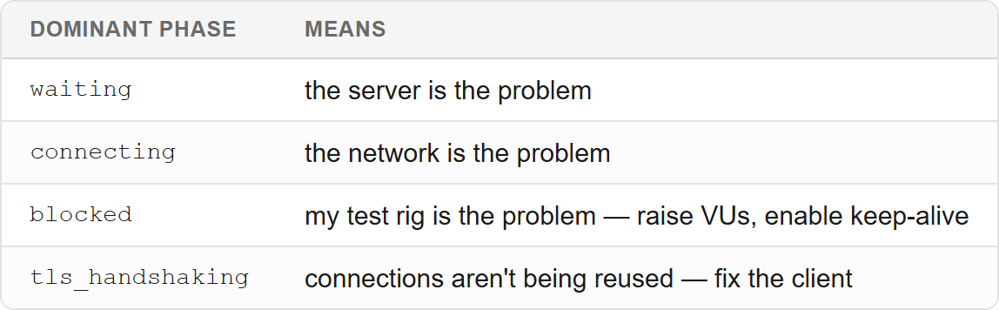
Custom Metrics
import { Counter } from 'k6/metrics';
const status200 = new Counter('responses_200');
export default function () {
if (res.status === 200) status200.add(1);
}Three kinds: Counter (only goes up), Gauge (up and down), Trend (a distribution — you can threshold its p(95)).
I split outcomes by class, so a run distinguishes "clean 200s" from "mostly 429s" from "mostly 5xx". Collapsing them into "not 200" hides which happened — and those call for opposite responses.
Meet the Demo
To make all of this concrete, I built a small order service with a checkout endpoint.
It's deliberately built to have three properties:
- A precondition (login → cart), so a test can't measure it without setting up state first.
- A variable cost (cart size), so the mix matters.
- A computable bottleneck (an internal worker pool), so I can predict the knee before I run anything.
The numbers are demo-scale on purpose. The methodology is what scales, not the rate.
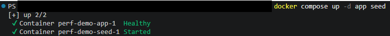
What to look at: two services up — the app and its datastore. Everything below runs against this stack.
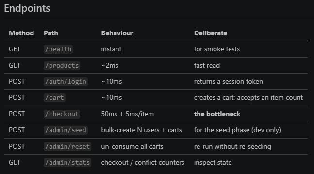
What to look at: which endpoints need a session token. Every one except health and products does — which is why a test that skips login gets a 401, not a number.
The bottleneck is the app's own worker pool. Let me explain what that means, because it's the key to the whole demo. When a checkout arrives, the app hands it to a worker — a fixed number of workers process checkouts, and each one handles a single checkout at a time. Think of them as cashiers at a checkout lane: there are only so many, and each serves one customer before taking the next.
My demo's pool has 5 workers, and each checkout occupies a worker for roughly 100ms — that's the app's own processing time, not a call to anyone else. If all 5 workers are busy, the next request waits in line.
That gives me a computable ceiling. Each worker can serve 1 ÷ 0.1 = 10 checkouts per second, and there are 5 workers, so the app can handle 5 × 10 = 50 req/s. Above 50 req/s, requests start queuing. Below it, they don't. That's the predicted knee — and I'll test exactly this later.
Because the limit is the app's own concurrency, it stays in scope: I'm measuring my service, and the external payment provider is still mocked (I'll say so in the caveats).
And because every endpoint except health and products needs a valid session token — and checkout needs a cart owned by that session — a test that skips the setup gets a 401/403, not a number. The test cannot accidentally work without its prerequisites. That's the whole point: the setup phase is not optional.
Step 1 — Smoke Test
One user, thirty seconds. "Does it work at all?"
I always do this first. If the smoke test fails, nothing after it is worth running.
The whole script is almost nothing — one VU, a couple of GETs, loose thresholds:
// 01-smoke.js
export const options = {
vus: 1,
duration: '30s',
thresholds: {
http_req_failed: ['rate==0'], // zero errors, no exceptions
http_req_duration: ['p(95)<1000'], // loose on purpose -- just prove it works
},
};
export default function () {
const health = http.get(`${BASE_URL}/health`);
check(health, { 'health is 200': (r) => r.status === 200 });
const products = http.get(`${BASE_URL}/products`);
check(products, { 'products is 200': (r) => r.status === 200 });
sleep(1);
}Note constant-vus (the default when you just set vus) — a closed model is fine here. I'm not looking for a breaking point, only "does it work at all."
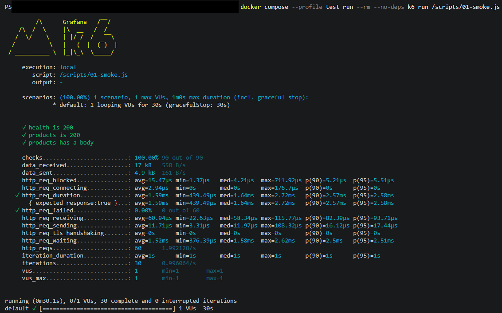
What to look at: checks at 100% and http_req_failed at 0%. That's the only question this run asks — does the endpoint answer at all? Latency is deliberately loose here.
Step 2 — Baseline
Checkout needs a session and a cart before it will answer. That state has to exist before the load starts — I can't create it per request, or I'd be measuring the setup, not the checkout. So the demo has a seed script that creates users and carts directly, and k6's setup() function loads them once, before the first request. Only then does the measured loop begin.
So this step shows three things:
- the seed script creating users and carts directly,
setup()fetching them once,- the measured loop hitting only checkout.
First, the seed — bulk, not one API call per user. The seed script asks the app to create everything in one request and writes the result to a file:
# app/seed.py
result = post(
"/admin/seed",
{"users": 200, "cartsPerSize": 100, "sizes": [1, 5, 10, 20, 100]},
)
with open("/data/seed.json", "w") as fh:
json.dump(result, fh)That's 200 users and 100,000 carts in about a quarter of a second. Creating a million users through the API would take days and pollute the measurement — so I seed directly. That's the point of this step.
Then k6 loads that file once, in setup(). setup() runs a single time before any load, so the pool is built once, not per request:
// lib.js
export function loadCarts() {
http.post(`${BASE_URL}/admin/reset`); // start from a clean pool
const bySize = {};
for (const user of raw) {
for (const [size, ids] of Object.entries(user.carts)) {
for (const cartId of ids) bySize[size].push({ token: user.token, cartId });
}
}
return { bySize };
}// 02-baseline.js
export function setup() {
return loadCarts(); // runs ONCE, before the first request
}Finally, the measured loop — and it touches only checkout:
export default function (data) {
const size = pickWeighted(REALISTIC); // realistic cart mix
const cart = takeCart(data, size); // a fresh, unconsumed cart
const res = http.post(
`${BASE_URL}/checkout`,
JSON.stringify({ cartId: cart.cartId }),
{ headers: { Authorization: `Bearer ${cart.token}` } }
);
check(res, { 'checkout ok': (r) => r.status === 200 });
}That split — setup once, then measure only the thing you care about — is the whole discipline. If I created the cart inside the loop, I'd be measuring the setup.
And the load shape is an open model at a steady 20 req/s:
scenarios: {
baseline: {
executor: 'constant-arrival-rate',
rate: 20, timeUnit: '1s', duration: '60s',
preAllocatedVUs: 30, maxVUs: 200,
},
},I set the rate, not the users — k6 supplies whatever VUs it needs to hold that rate. That's the open model from earlier, in practice.
I record the baseline p95 and the mix it was measured at — because a number without its mix isn't a result.
The baseline passed: throughput held at 19.8 req/s, p95 151.1ms (target 300ms), error rate 0%, and dropped_iterations at zero.
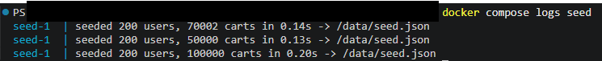
What to look at: 200 users and 100,000 carts created in one call — the pool the load will draw from.
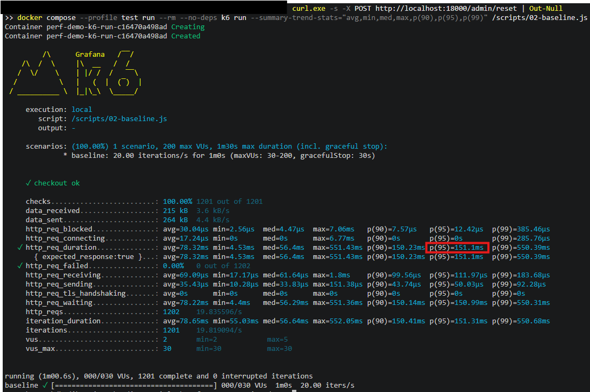
What to look at: http_req_duration p95 against the 300ms target, plus dropped_iterations at zero — nothing was refused.
Step 3 — Stress Test: Find the Knee
I predict the knee before I run. From the worker pool's arithmetic above, I expect the limit at 50 req/s — so that's the number I write down before starting the test.
Then I ramp past it — 5 → 80 req/s — and show the result matching the prediction.
The executor is ramping-arrival-rate: an open model where I raise the offered rate on a schedule and let the queue build.
// 03-stress.js
// PREDICTION: 5 workers / 0.1s service time = 50 req/s.
// Expect p95 to climb as the offered rate passes ~50/s.
scenarios: {
stress: {
executor: 'ramping-arrival-rate',
startRate: 5,
timeUnit: '1s',
preAllocatedVUs: 50,
maxVUs: 600, // past the knee, waiting requests need VUs
gracefulStop: '15s', // bound the drain so the summary always prints
stages: [
{ duration: '20s', target: 20 }, // warm up, below the knee
{ duration: '30s', target: 50 }, // approach the predicted knee
{ duration: '30s', target: 80 }, // push past it
{ duration: '10s', target: 0 }, // ramp down
],
},
},Two details that matter. The cart size is held fixed at 10 items (~100ms) so the only variable is the rate. And the thresholds are the finding, not a safety net — I want this one to go red:
thresholds: {
http_req_duration: ['p(95)<300'], // this SHOULD fail past the knee
http_req_failed: ['rate<0.05'], // guard: catch a broken run
checks: ['rate>0.95'], // guard: catch a broken run
},That's far more convincing than "the system got slow." If the knee appears where I predicted, I understand the system. If it appears somewhere else, my assumption was wrong — and that's a finding, not a failure.
And it matched. The ramp kept asking for more — up to 80 req/s — but the delivered throughput stopped at around 50 req/s, almost exactly the number I predicted, while p95 climbed from a flat 102ms into the seconds:
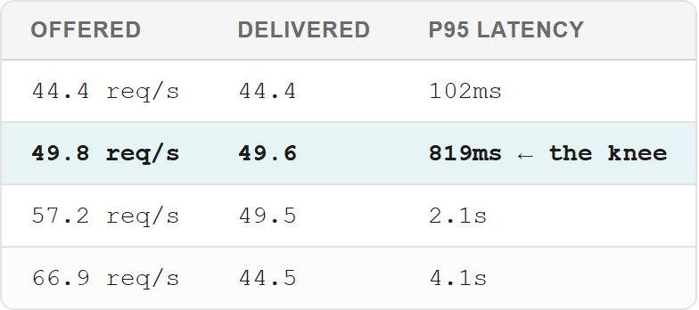
Look at what happens past the knee. The ramp asked for 57, then 67 — and the app didn't just stop at 50, it delivered less: 49.5, then 44.5. The queue got so backed up that requests took so long to finish that fewer completed at all. That's the overload collapse: offered rate up, delivered rate down.
And dropped_iterations went non-zero past the knee, which is exactly the signal I described earlier — the test was offering more than the app could take.
(One honesty note: those past-the-knee numbers move between runs. Across the runs I did, the delivered rate once past the knee sat somewhere in the 44–50 range, and the exact digits shift every time. The shape is stable — flat, then the bend, then the fall — even when the numbers move. That's why I report the shape and the prediction, not a single heroic number.)
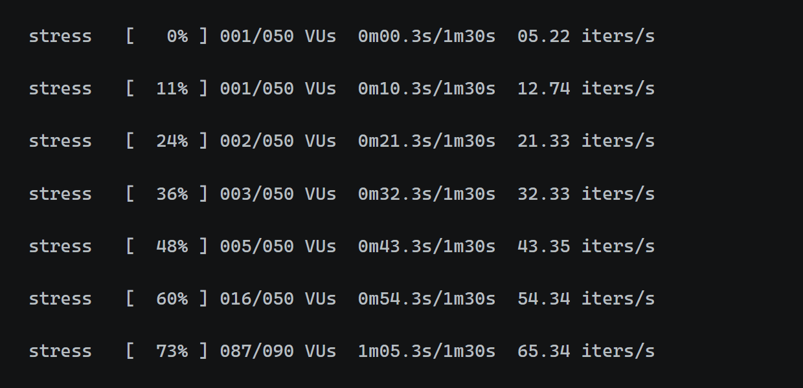
What to look at: the VUs column. It sits at 1–5 while the app keeps up, then explodes — 16, then 87, then 175 — as requests start queuing. The iters/s column on the right is the offered rate, still climbing to ~77 while the app delivers only ~50. That widening gap is the knee.
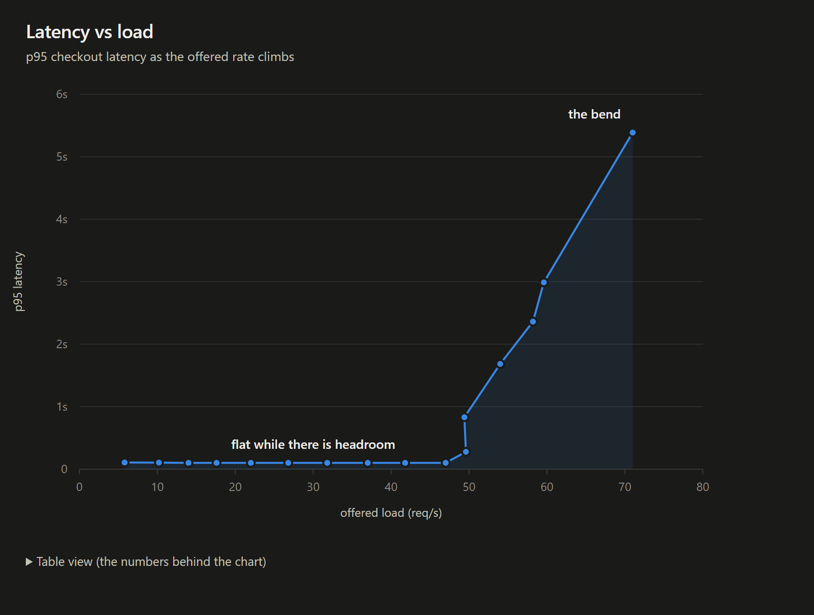
What to look at: the flat stretch, then the bend. Latency holds near 100ms below the knee and shoots into the seconds above it — the same story the VU column told, drawn as a curve.
Step 4 — The Cart-Size Mix
Now the payoff. I re-run the same endpoint with three mixes — all small, realistic, and all heavy — holding the rate constant across the three and the threshold the same, then put the results side by side.
One deliberate choice: I keep the rate low enough that every mix is sustainable. If I pushed the rate up, the heavy mix would stop measuring service time and start measuring queueing — and then I'd be testing the load, not the mix. The mix has to be the only variable.
The three mixes are just weight tables, and one env var picks which one runs:
// 04-mix.js
const MIX = __ENV.MIX || 'realistic';
const RATE = Number(__ENV.MIX_RATE || 5); // LOW, so every mix is sustainable
const MIXES = {
'all-small': [{ items: 1, weight: 100 }],
'realistic': [{ items: 1, weight: 60 }, // 60% tiny
{ items: 5, weight: 30 }, // 30% small
{ items: 20, weight: 9 }, // 9% medium
{ items: 100, weight: 1 }], // 1% huge <- the tail
'all-heavy': [{ items: 100, weight: 100 }],
};
const choices = MIXES[MIX];Then I run it three times, changing only MIX:
MIX=all-small k6 run 04-mix.js
MIX=realistic k6 run 04-mix.js
MIX=all-heavy k6 run 04-mix.jsThe threshold is identical for all three — that's the whole lesson:
thresholds: {
http_req_failed: ['rate<0.01'],
http_req_duration: ['p(95)<300', 'p(99)<800'], // SAME threshold, every mix
},Same endpoint, same rate, same threshold. Only the mix moves.
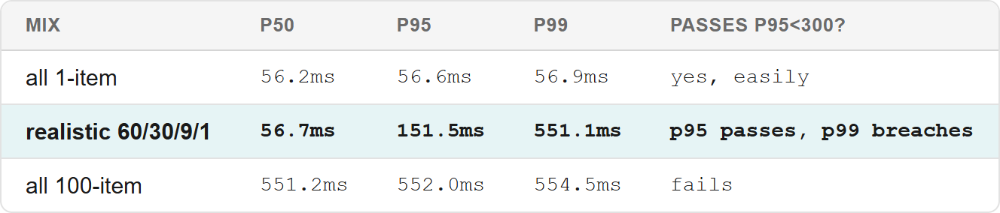
Measured: p50 stays flat (56ms) while p99 moves roughly ten times (56.9ms → 551.1ms). The small fraction of heavy carts defines the tail.
Look at the realistic row: the same endpoint, at the same rate, passes the p95 requirement and breaches p99 — because 1% of carts are huge and p99 looks at exactly the top 1%.
This is the most valuable lesson in the whole article, made concrete: the same endpoint passes or fails the same requirement depending on the mix. So a bare "p95 < 300ms ✅" is meaningless without saying what mix produced it.
And here's the instability I found. Same realistic mix, same code, three runs — only the random seed changed:
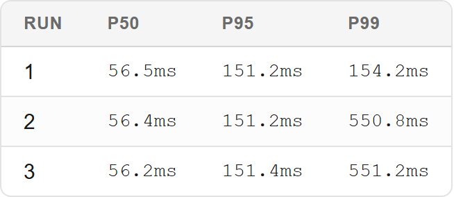
p99 flipped between runs, because ~1% of requests are heavy and p99 sits right on that boundary — the 99th percentile either lands on a heavy request or it doesn't. So I report several percentiles, and I say when a number is marginal.
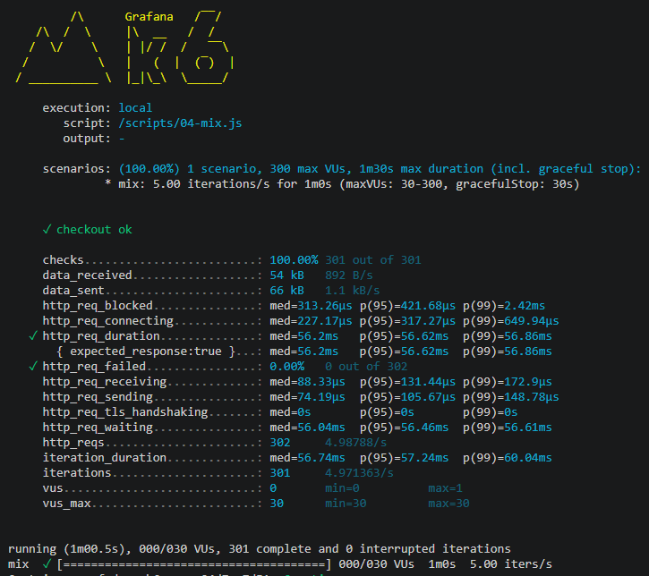
Mix 1 of 3 — all-small (every cart 1 item). p50/p95/p99 all sit at ≈56ms. No heavy carts, so no tail; passes the threshold with room to spare.
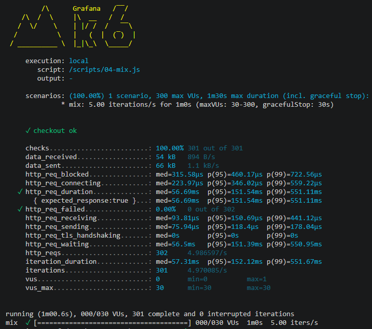
Mix 2 of 3 — realistic (60/30/9/1%). p50 stays flat at ≈56ms, but p99 jumps to ≈551ms. p95 passes the 300ms bar, p99 breaches it — the 1% of heavy carts lands exactly where p99 looks.
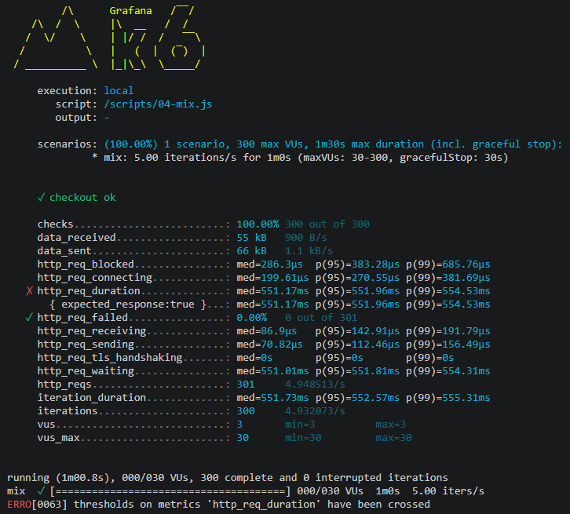
Mix 3 of 3 — all-heavy (every cart 100 items). Now even p50 is ≈551ms — the whole distribution shifts and it fails outright.
Read the three together: same endpoint, same rate, same threshold — only the mix changes, and the verdict flips from pass to marginal to fail.
Step 5 — Spike Test
Traffic jumps 10× instantly. Does it survive — and does it recover when the spike passes?
Recovery is the part people forget. A system that survives the spike but never comes back down is still down.
The stages are the test — a sharp jump up, a hold, then a drop back to prove recovery:
// 05-spike.js -- cart size held at 1 item (~55ms) so the spike is about RATE
scenarios: {
spike: {
executor: 'ramping-arrival-rate',
startRate: 10,
timeUnit: '1s',
preAllocatedVUs: 50,
maxVUs: 2000,
stages: [
{ duration: '15s', target: 10 }, // normal load
{ duration: '5s', target: 100 }, // the spike: jump 10x, fast
{ duration: '20s', target: 100 }, // hold the spike
{ duration: '5s', target: 10 }, // drop back down
{ duration: '15s', target: 10 }, // does it recover?
],
},
},Two things to notice. The target: 10 after the spike is the recovery check — I hold at normal load for 15s and watch whether latency comes back down. And I only threshold the error rate here:
thresholds: {
http_req_failed: ['rate<0.05'], // did it survive? errors are the pass/fail
},I don't threshold latency — a spike is supposed to be slow, so a latency threshold would fail by design and tell me nothing. Survival plus recovery is the whole question.
It did both. The spike held at ~90 req/s with 0% errors and p95 at 1.56s — then dropped straight back to the pre-spike rate:
10 req/s → 90 req/s (spike) → 10 req/s (recovered)(It plateaus at ~90, not 100, because 1-item carts take ~55ms — and 5 ÷ 0.055 ≈ 90. The same arithmetic again.)
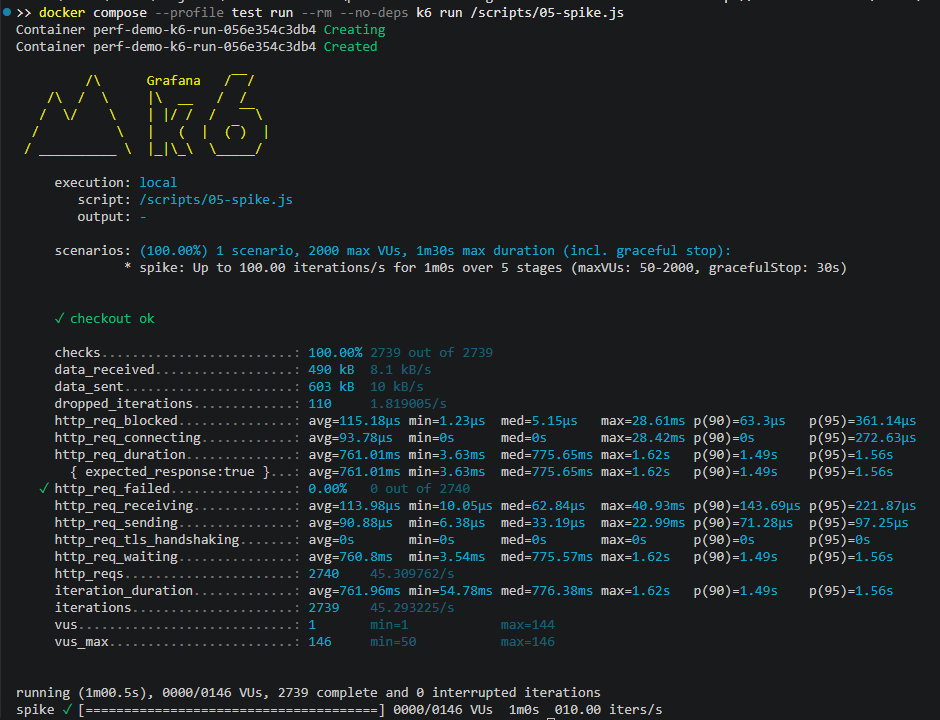
What to look at: two things — http_req_failed staying at 0% (it survived the surge), and the rate falling back to the pre-spike level at the end (it recovered). A spike you survive but never come down from is still down.
Reading the Results — The Traps I Check
Every one of these comes from experience:
- Vacuous thresholds. A threshold that can't fail proves nothing. If the p95 target is 300ms and reality is 3ms, the ✓ is noise.
- The test rig as the bottleneck. Check
blockedandconnecting— my own client may be the limit, not the server. - Test environment ≠ production. The number doesn't transfer.
- Measuring the wrong component. If a rate limiter fires, I measured the limiter, not the app.
dropped_iterationsnon-zero. The ramp wasn't delivered; the test is lying about its own load.- A short test can't see a rare tail. If 1% of traffic is heavy, I need thousands of samples for p99 to even be defined.
- A green latency number on a failed run. The one that bit me hardest, and it's worth a paragraph.
The trap that bit me: a passing latency on a failing test
Because checkout consumes the cart, every iteration needs a fresh one. On one of my runs the seeded carts ran out — so checkout started returning 409 (already consumed). Here's what the summary said:
✗ http_req_duration..............: p(95)=100.97ms ← PASSES
http_req_failed................: 93.34% (3407/3650) ← 93% FAILEDThe latency threshold passed while 93% of my requests failed. The 409s come back fast, so they drag the latency down — the test looked healthy at exactly the moment it was measuring nothing but errors.
The reason it slipped through: my stress script only thresholded http_req_duration. A run can fail a million requests and still print a green duration.
The fix is three things:
- Reset the state before the run. The setup phase now clears the cart pool, so every run starts clean.
- Fail loudly when the data runs out — don't wrap around and silently re-serve used carts.
- Threshold the error rate, not just the latency —
http_req_failed: ['rate<0.05']andchecks: ['rate>0.95'].
The lesson: a latency number is only meaningful when the error rate is near zero. Before I trust a duration, I read http_req_failed and checks first. A green p95 on a 93%-failed run is worse than no number at all — it's a false pass.
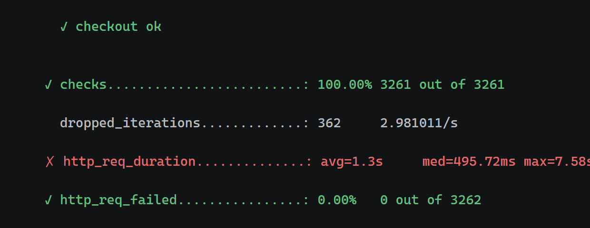
What to look at: the summary block. checks at 100% and http_req_failed at 0% say the run was valid; ✗ http_req_duration p(95)=3.64s is the knee going red on purpose; and dropped_iterations: 362 is the proof — the ramp offered more than the app could accept. Read the first two lines before you trust the third.
Pro-Tips for Your First Load Test
A few things I wish someone had told me earlier:
- Write the requirement down before you touch a tool. A test without a target is a demo, not a test.
- Do the smoke test first, always. One user for thirty seconds saves hours of chasing a broken script.
- Read the phases, not just the duration.
waitingblames the server;blockedblames your rig. - Predict the knee, then confirm it. When the number matches your arithmetic, you understand the system — not just the result.
- Report the caveats with the numbers. The conditions are part of the result.
Best Practices
- Model the mix, not just the endpoint. Real traffic is a distribution; so is your test.
- Use an open model to find a break. A closed model cools down when things get hot.
- Seed your data directly. Creating a million users through the API is slow and pollutes the measurement.
- Isolate state per VU. Shared carts produce phantom errors that don't exist in production.
- Mock external dependencies — and say so. The real payment latency is not in your number.
- Let thresholds fail. A green ✓ you can't trust is worse than a red one you can.
Conclusion
Performance testing is a lifecycle, not a script. Get the vocabulary right, get the number first, seed the data, run it in the right model, and read the phases — not just the average. The tool is interchangeable; the concepts are not.
I hope this gives you a foundation you can carry into any tool you pick up next.
Further Reading and Resources
- Official k6 Documentation
- Grafana k6: Test Types and Executors
- Little's Law (Wikipedia) — the arithmetic behind capacity planning
Closing Note
Thank you for learning with me. If you found this useful, feel free to share your experiences or ask questions in the comments below — I'm always happy to talk performance testing.
Happy testing!
Email: dhadiprasetyo@gmail.com
LinkedIn: Darmawan Hadiprasetyo